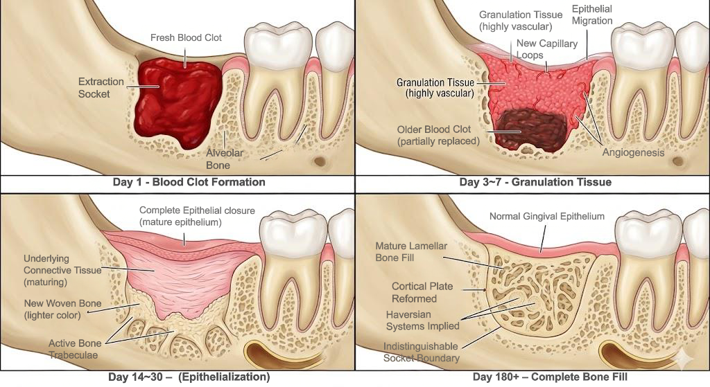
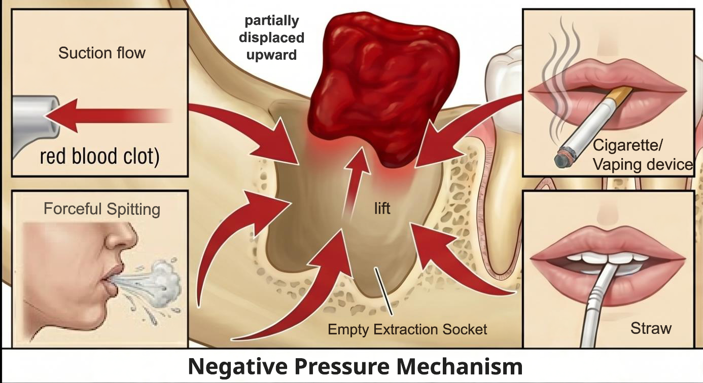

전북대학교병원 구강악안면외과 · 사랑니 Q&A
검진이 먼저입니다
사랑니는 증상이 없어도 숨어서 진행 중일 수 있습니다.
정기 파노라마 X-ray로 조기에 발견하고, 필요한 시기에 전문의와 함께 결정하세요.

강의 자료
신경수 교수
전북대학교병원 구강악안면외과
2026. 05. 09
전북대학교병원 구강악안면외과
2026. 05. 09
탭을 선택하면 각 단계의 생물학적 과정을 확인할 수 있습니다.


해당하는 증상을 모두 선택하고 하단 버튼을 눌러 판단 결과를 확인하세요.
⚠ 교육 목적이며 임상 진단을 대체하지 않습니다.
사랑니는 증상이 없어도 숨어서 진행 중일 수 있습니다.
정기 파노라마 X-ray로 조기에 발견하고, 필요한 시기에 전문의와 함께 결정하세요.